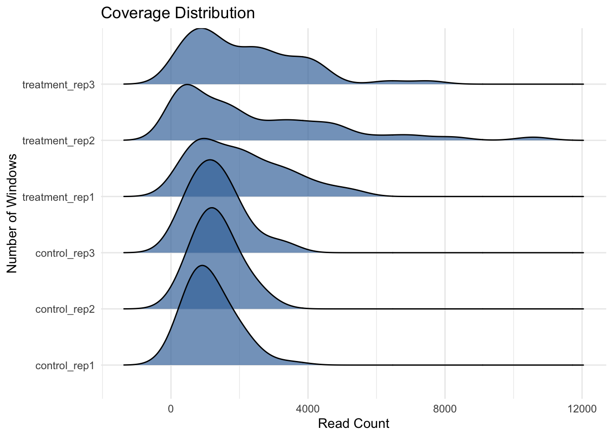
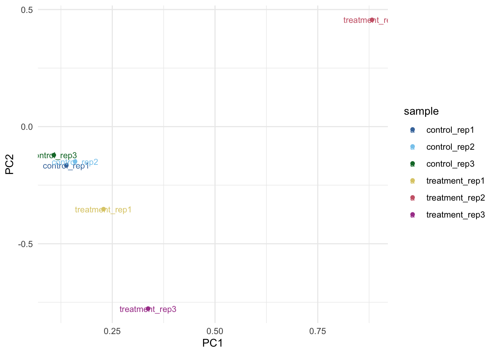

Chapter 2 Counting Aligned Reads in Genomic Regions
2.1 About this chapter
- Questions
- How do I calculate counts of reads at genes from my alignments?
- Objectives
- Understand the basis for the gene region and read counting technique
- Understand what the count matrix represents
- Use the
make_counts()function to make a count matrix
- Keypoints
- Gene regions are designated by coordinates in GFF files
- A count matrix is a table-like object of reads that are found in a given genomic region
- The count matrix is the main object in a DESeq analysis
In this chapter we’ll look at the fundamentals of read counting from a BAM file of aligned reads.
2.2 Counting the number of reads that have aligned to gene regions
The basis of quantitative RNAseq is working out how many of our sequence reads have aligned to each gene. In broad terms this is done by taking the genomic coordinates of all the aligned reads (the start and end positions of the read’s alignment on the reference genome) and cross-referencing them with the positions of the genes from a gene file. The resulting table is called a count matrix. See the figure below for a representation.
Figure 2.1: A) Graphic of read alignment and gene position showing reads within genes. B) The equivalent count matrix that comes from this alignment
It is our aim in this section to create a count matrix from BAM files.
2.2.1 atacR
atacR was initially designed to help with the analysis of ATAC-Cap-seq data, a quite differen sort of data to RNAseq, but as with many bioinformatics pipelines, the first steps are quite common so we can make use of the neat way atacR handles the count matrix creation in the helpful function make_counts()
2.3 Preparing the input
We needs three things to work: the BAM files, a GFF file and a file of sample information.
2.3.1 The GFF file
GFF files are one way among many of describing the positions of genes on a genome. Here’s a quick look at one.
chr123 . gene 1300 1500 . + . ID=gene1
chr123 . gene 1050 1500 . + . ID=gene2
As you can see, it’s a simple file with a gene represented on each line, by its chromosome (chr123), its start and end and its strand. The best thing about GFF files is that usually we can just download them from the relevant genome website. They tend to be freely available.
2.3.2 The Sample Information file
This file is a really simple file that references the BAM file of the alignment with the sample and replicate information. It has three columns: sample_name, bam_file_path and treatment.
Here is an example.
## Parsed with column specification:
## cols(
## treatment = col_character(),
## sample_name = col_character(),
## bam_file_path = col_character()
## )| treatment | sample_name | bam_file_path |
|---|---|---|
| control | control_rep1 | sample_data/control1/alignedSorted.bam |
| control | control_rep2 | sample_data/control2/alignedSorted.bam |
| control | control_rep3 | sample_data/control3/alignedSorted.bam |
| treatment | treatment_rep1 | sample_data/treatment1/alignedSorted.bam |
| treatment | treatment_rep2 | sample_data/treatment2/alignedSorted.bam |
| treatment | treatment_rep3 | sample_data/treatment3/alignedSorted.bam |
The sample_name column describes the treatment and replicate performed, the bam_file_path describes the place in which the BAM file for that sample is saved and treatment is the general name for the treatment that was used; this column is usually not unique when you have replicates.
2.3.3 The BAM files
The BAM files all come from a previously done alignment. The sample information file describes the place where they are kept and the sample they represent.
2.3.4 Sample files for this chapter
All the files are provided for you in the sample data you downloaded as 50_genes.gff and sample_information.csv and in the folders containing BAM files. Feel free to examine them and look at how they relate to each other.
Once we have these files prepared, we can go on to use the atacR package to make the count matrix.
2.4 Running make_counts()
First we must load in atacR. Type the following into the R console.
Now we can do the counting with make_counts(). Here’s how to do it. Remember to properly describe the path to the files. The paths given here are correct if the files are in a folder called sample_data in the current working directory.
count_information <- make_counts("sample_data/50_genes.gff",
"sample_data/sample_information.csv",
is_rnaseq = TRUE
)The function should run and give no output. Note that it is important to set is_rnaseq to TRUE to tell the function to count appropriately. The results are saved in the count_information object.
2.5 Summaries and Diagnostic plots
With the counts computed we can do some diagnosis on the quality of the experiment.
We can see summary information with the summary() function
## ATAC-seq experiment of 2 treatments in 6 samples
## Treatments: control,treatment
## Samples: control_rep1,control_rep2,control_rep3,treatment_rep1,treatment_rep2,treatment_rep3
## Bait regions used: 50
## Total Windows: 99
##
## On/Off target read counts:
## sample off_target on_target percent_on_target
## 1 control_rep1 0 57733 100
## 2 control_rep2 0 66155 100
## 3 control_rep3 0 66122 100
## 4 treatment_rep1 0 100547 100
## 5 treatment_rep2 0 120325 100
## 6 treatment_rep3 0 107611 100
## Quantiles:
## $bait_windows
## control_rep1 control_rep2 control_rep3 treatment_rep1 treatment_rep2
## 1% 149.48 294.60 241.12 228.70 102.98
## 5% 386.35 437.75 340.50 328.30 193.90
## 95% 2335.20 2438.20 2927.10 4445.90 6940.20
## 99% 3054.18 2752.19 3291.34 5234.33 9423.95
## treatment_rep3
## 1% 116.50
## 5% 324.00
## 95% 4438.75
## 99% 6948.15
##
## $non_bait_windows
## control_rep1 control_rep2 control_rep3 treatment_rep1 treatment_rep2
## 1% 0 0 0 0 0
## 5% 0 0 0 0 0
## 95% 0 0 0 0 0
## 99% 0 0 0 0 0
## treatment_rep3
## 1% 0
## 5% 0
## 95% 0
## 99% 0
##
## Read depths:
## sample off_target on_target
## 1 control_rep1 0 1154.66
## 2 control_rep2 0 1323.10
## 3 control_rep3 0 1322.44
## 4 treatment_rep1 0 2010.94
## 5 treatment_rep2 0 2406.50
## 6 treatment_rep3 0 2152.22It is long, but actually quite helpful. The first thing to note is that the words relate to ATAC-Cap-Seq, but in our context ‘bait regions’ just mean gene regions and non-bait just means intergenic regions. The ‘on_targets’ are read hits to genes, the ‘off_targets’ are read hits to intergenic regions.
We can see that all the reads have hit in gene regions; that the read depth distribution of genes from the quantiles section give depths in the 1000 - 2000 range. This sort of summary is helpful when you’re trying to work out whether the RNAseq is useful, lots of reads ‘off target’ is bad, as is low depth.
2.5.1 Gene Count Plots
We can see the distribution of depths over genes as a plot using the plot_counts() function
## Picking joint bandwidth of 488
We can see that the mean count per gene (windows in atacR) is about 1000. The distributions in the treatment are bit more skewed than the controls.
2.5.2 Comparing Samples with PCA
It is common to examine the similarity of the samples to each other before moving on with analysis, ideally the similar samples will cluster together.
With atacR it is easy to perform a quick PCA analysis.

Here we can see that the control samples all cluster together, but the treatment samples are a bit more variable. We might want to normalise these counts later as a consequence.
2.6 Extracting and saving the count matrix
We now want to extract out the actual counts hiding inside the count_information object, we can do this with the assay() extractor function from the Summarized Experiment package.
## control_rep1 control_rep2 control_rep3
## Chr1:245989-249141 670 784 548
## Chr2:2195797-2200134 1104 1266 976
## Chr3:2454387-2458244 703 922 198
## Chr4:6650421-6657260 1865 1654 3207
## Chr5:11798344-11805414 1482 1266 1646
## Chr1:12893748-12901885 1186 1416 1458
## treatment_rep1 treatment_rep2 treatment_rep3
## Chr1:245989-249141 1784 2558 368
## Chr2:2195797-2200134 358 1186 4436
## Chr3:2454387-2458244 1373 1167 1726
## Chr4:6650421-6657260 3533 703 2427
## Chr5:11798344-11805414 1258 1690 1864
## Chr1:12893748-12901885 834 594 2684We can see the counts for each gene in each sample. Because atacR works on windows, the gene coordinates are given. We can replace the coordinates with gene names if we wish as follows
## Parsed with column specification:
## cols(
## X1 = col_character()
## )## control_rep1 control_rep2 control_rep3 treatment_rep1
## AT1G01680 670 784 548 1784
## AT1G07160 1104 1266 976 358
## AT1G07920 703 922 198 1373
## AT1G19250 1865 1654 3207 3533
## AT1G32640 1482 1266 1646 1258
## AT1G35210 1186 1416 1458 834
## treatment_rep2 treatment_rep3
## AT1G01680 2558 368
## AT1G07160 1186 4436
## AT1G07920 1167 1726
## AT1G19250 703 2427
## AT1G32640 1690 1864
## AT1G35210 594 2684In this code chunk we load in the gene names from a file gene_names.txt using the readr package. Then we use the rownames() function to set the row names of raw_counts. This is a little cumbersome. Often you’ll come across fiddly little things like this in bioinformatics analysis. If you ever get stuck feel free to come and chat to us in the bioinformatics team.
Now we can save the matrix to a file for re-use and importing into other programs. We’ll do it in two ways 1) to a native R binary file that we can load straight in, 2) to a CSV file we can examine in programs including Excel.
2.6.1 Saving to an R RDS file
To save as a native R object, use saveRDS(), passing the filename you wish to save to.
To save as a csv file use write.table(), again passing the filename you wish to save to.
Now we can move on to using DESeq.